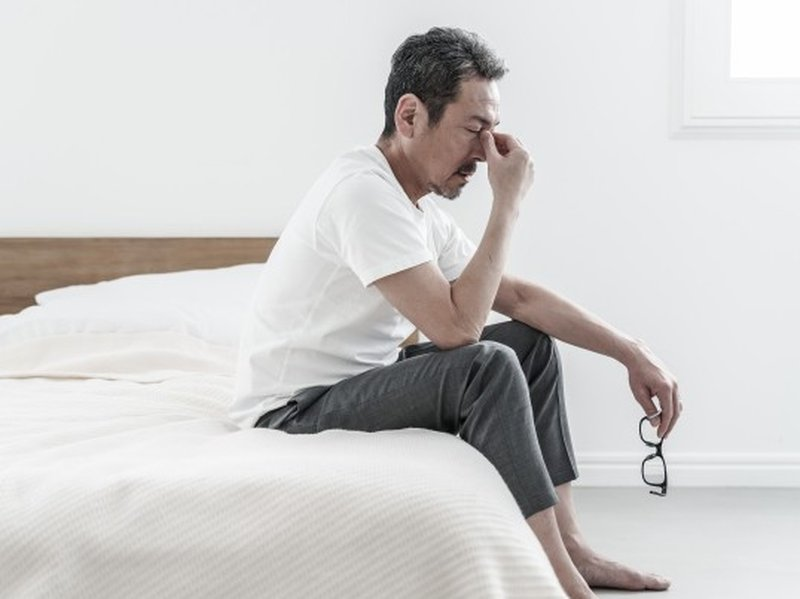

▶肩こり （デスクワークに多い）
デスクワークで動かない首や肩。放っておくと、慢性的な頭痛や 四十肩につながることもあります。
小さな不調を放置していませんか？
日々の忙しさの中、
様々なからだの不調を抱えつつも放置しがちな現代人…
その積み重なった不調をどうにかできないのだろうか？
「からだのシグナル」は日々の不調と向き合うすべての人と、
セルフケアの正しい知識を届けたい専門家
をつなぐプロジェクトです。
※不調を我慢している方はもちろん、まだ症状のない方の予防的な知識としてもご覧いただけます。
からだの不調に関する情報発信を行う「〇〇メディア」と 現場で日々からだと向き合う整体師の知見をもとに、このプロジェクトが始まりました。
気になる不調をチェック
デスクワークで動かない首や肩。放っておくと、慢性的な頭痛や 四十肩につながることもあります。
重だるさを感じつつも我慢しがちな腰。悪化すると、椎間板 ヘルニアや坐骨神経痛の引き金になることも。
気づかないうちに前に出た頭。ストレートネックや自律神経 の乱れにつながる可能性があります。
「いつものこと」と見過ごしがちな頭痛。原因を探らないまま 鎮痛剤に頼る生活が習慣化することも。
季節を問わず感じる手足の冷え。血流の滞りが慢性化すると、 免疫力の低下につながることもあります。

画面を見続ける毎日で蓄積する目の疲れ。肩こりの慢性化や、 睡眠の質の低下と関係していることも。
今日からできるセルフケアの方法を、動画でご紹介しています。今後も随時追加予定です。
日常の健康ハックを学びましょう
日常に潜む小さな不調のサインと、そのセルフケア方法を発信していきます。